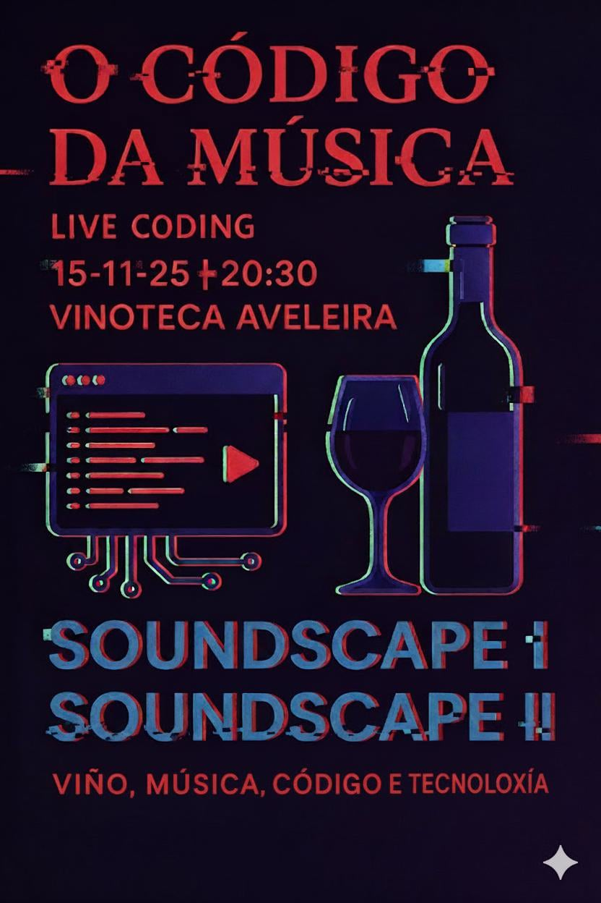
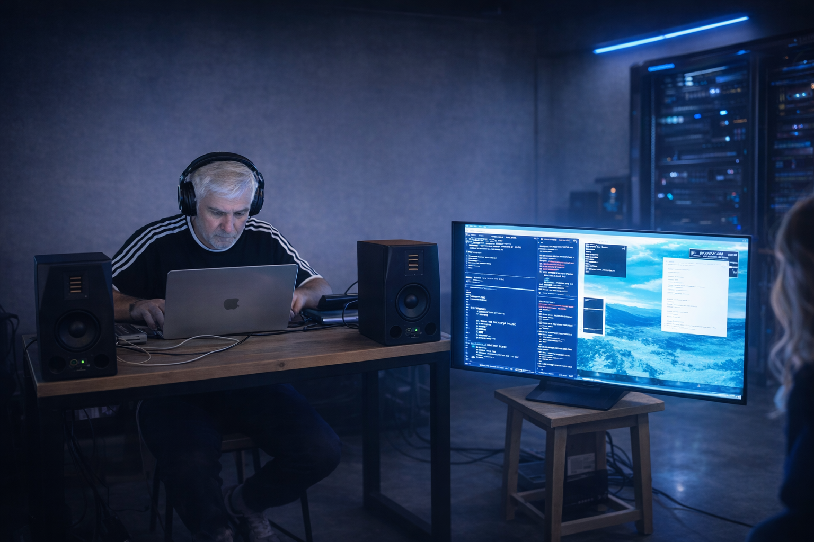
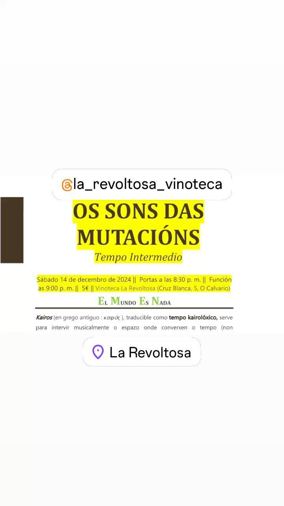
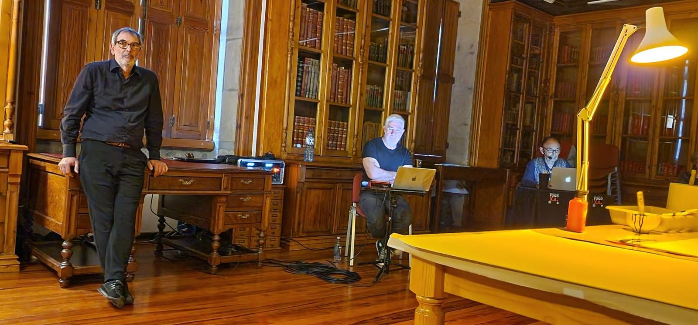

// sets de live coding
Sets de Live Coding
// última sesión documentada
Archivo de sesiones
Schmidt · Sala SuperSonic
Vigo — 3 de abril de 2026 · 10:30 h
📱 Marcos López · iPhone
I — Twistores
Parte de la idea de giro, torsión y cruce de planos. Con una referencia de fondo al concepto de twistor: una manera de imaginar el espacio desde relaciones, pliegues y cambios de perspectiva.
II — Tribar
Como el triángulo imposible de Penrose: geometría que parece coherente, pero no puede sostenerse del todo en el espacio. Repetición, desplazamiento, pequeñas variaciones e inestabilidad, siempre desde la improvisación.
// vídeos de la sesión · grabación Marcos López
Sin fechas públicas en este momento
La agenda de directos se actualizará aquí cuando haya una actuación confirmada y publicada.
// archivo histórico
Sesiones anteriores
Live Coding Sessions · Aveleira
Vinoteca Aveleira, Vigo


OS SONS DAS MUTACIÓNS · Tempo Intermedio
Vigo — El mundo es nada. Kairós e intervención del espacio
EL MUNDO ES NADA
Kairós (en grego antiguo : καιρός), traducible como tempo kairolóxico, serve para intervir musicalmente o espazo onde converxen o tempo (non cronolóxico) y a acción, conceptos inseparables do καιρός.

Intervención musical del espacio y el tiempo no cronológico.
EMAO · Biblioteca Escuela de Artes y Oficios
Vigo — Principio cairológico, IChing e Inteligencia Artificial
A partir del principio cairológico del profesor Carlos Paris y su pensamiento humanista con una preocupación por la ciencia y la técnica, José Tono Martínez, Darío Basso y Silvino Díaz reinterpretaron las ideas de contingencia y la aleatoriedad de una manera interdisciplinar, fusionando la tradición del oráculo milenario chino con la emergencia de la tecnología más avanzada: el IChing y la Inteligencia Artificial.

- José Tono Martínez
- Darío Basso
- Silvino Díaz
IChing · Inteligencia Artificial · Azar
// archivo · Sesiones documentadas: Schmidt · Sala SuperSonic (Vigo, 3 abr 2026) · Aveleira (Vigo, 15 nov 2025) · Os Sons das Mutacións (Vigo, 14 dic 2024) · EMAO (Vigo, 21 jun 2024). El archivo crece a medida que las actuaciones se documentan con fechas y vídeo verificados.